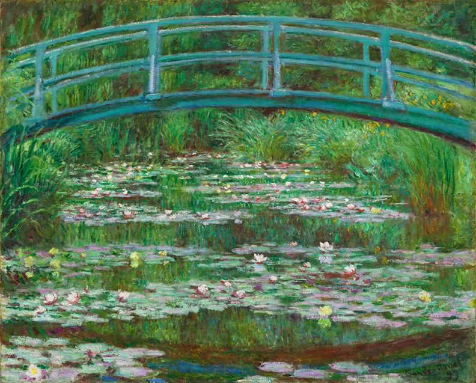

Біографія
Художник Клод Моне, ім’я якого є синонімом народження імпресіонізму, здійснив революцію у світі мистецтва своїм інноваційним використанням кольору, світла та мазка. Його роботи, що характеризуються яскравими відтінками та ефірною якістю, продовжують захоплювати глядачів у всьому світі.
Раннє життя художника
Клод Моне народився 14 листопада 1840 року в Парижі, Франція, але провів свої ранні роки в Гаврі, портовому містечку в Нормандії. Батько Моне, Адольф Моне, був бакалійником, а мати, Луїза-Жюстін Обрі Моне, була співачкою. Незважаючи на сподівання батька, що він приєднається до сімейного бізнесу, Моне рано виявив інтерес до мистецтва, заохочуваний матір’ю.
Пізні роки життя
Останні роки Моне провів у Живерні, де він створив свою знамениту серію картин із лататтям. Цей період його життя був відзначений інтенсивною продуктивністю та інноваціями. Серія водяних лілій, а також його картини Японського мосту та Руанського собору вважаються одними з його найкращих робіт. Погіршення зору Моне в останні роки життя призвело до зміни стилю його живопису. Його мазки стали ширшими й абстрактнішими, а кольори — інтенсивнішими. Незважаючи на ці проблеми, Моне продовжував малювати до самої смерті в 1926 році.
Творчість
Природа була основним джерелом натхнення для Моне. Він невпинно досліджував світло та колір, відтворюючи мінливі ефекти освітлення та атмосферу в різний час доби та за різних погодних умов. Найвідоміші мотиви його творчості – це сади, водяні лілії, річки та поля, які він спостерігав і зображав у різні сезони.
Відомі картини Клода Моне
Враження, Схід сонця (1872)
«Враження, схід сонця» — це, мабуть, найвідоміша картина Моне, оскільки вона дала назву імпресіоністському
руху. Ця робота зображує порт Гавра на сході сонця, коли сонце кидає тепле світло на воду. Картина примітна
своїм розкутим мазком і яскравими кольорами, які вловлюють швидкоплинні ефекти світла.
Жінка з парасолькою (1875)
«Жінка з парасолькою» — це портрет дружини Моне Камілли та їхнього сина Жана у вітряний літній день. Картина
характеризується динамічною композицією та відчуттям руху в кружлянні хмар і трави. Використання Моне світла й тіні
створює яскраву та реалістичну сцену.
Серія «Водяні лілії» (1896-1926)
Серія водяних лілій Моне, створена протягом останніх 30 років його життя, є однією з його найвідоміших і незмінних робіт.
Ці картини зображують ставок з ліліями в його саду в Живерні, захоплюючи мінливе світло та відблиски на воді. Серія включає близько
250 картин, кожна з яких є дослідженням кольору, світла та форми.
Серія “Руанський собор” (1892-1894)
Серія «Руанський собор» складається з понад 30 картин, кожна з яких зображує фасад собору в різний час доби та за різних погодних умов.
Ретельне дослідження Моне світла й тіні на складній архітектурі собору призвело до серії робіт, які є водночас детальними та атмосферними.
Японський міст (1899)
«Японський міст» — ще одна культова робота часів Моне в Живерні. На цій картині зображений місток через ставок з ліліями, оточений пишною
рослинністю. Використання Моне кольору та світла створює спокійну та гармонійну сцену, що відображає його глибокий зв’язок із садом.
Корисна інформація
Ми в мережах
Стиль
Термін «імпресіонізм» походить від картини Моне «Враження, схід сонця» (1872). Цей рух характеризувався зосередженням на захопленні перехідних ефектів світла та кольору. Моне разом з іншими митцями, такими як П’єр-Огюст Ренуар, Едгар Дега та Альфред Сіслей, склав ядро групи імпресіоністів.
Імпресіонізм відірвався від традиційного, дуже деталізованого академічного стилю живопису, який домінував у французькому мистецтві. Натомість він акцентував увагу на вільному малюнку, яскравих кольорах і повсякденних сценах. Цей підхід спочатку був зустрінутий критикою, але згодом отримав визнання та глибоко вплинув на напрямок сучасного мистецтва.
Галерея
Враження, Схід сонця (1872)
Жінка з парасолькою (1875)
Серія «Водяні лілії» (1896-1926)
Серія “Руанський собор” (1892-1894)
Японський міст (1899)